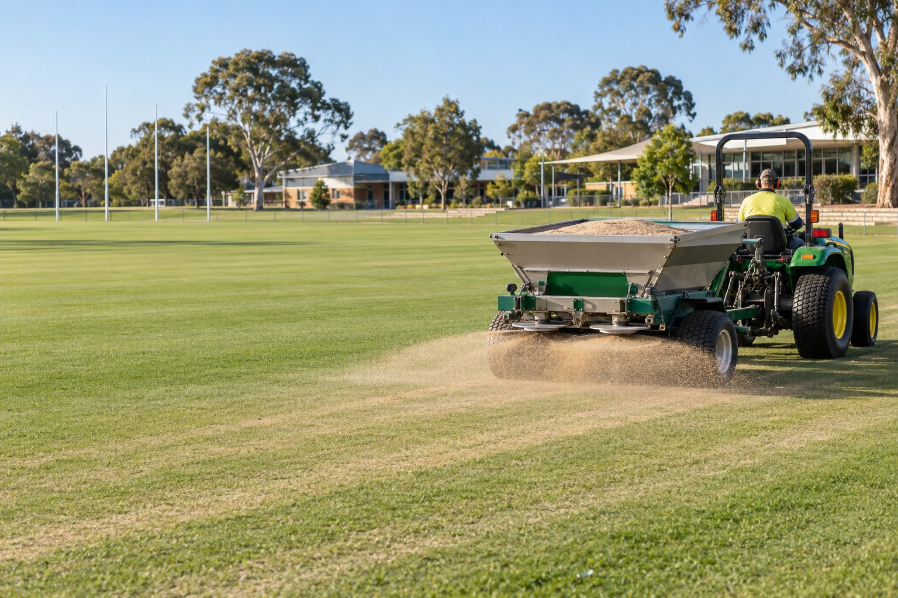
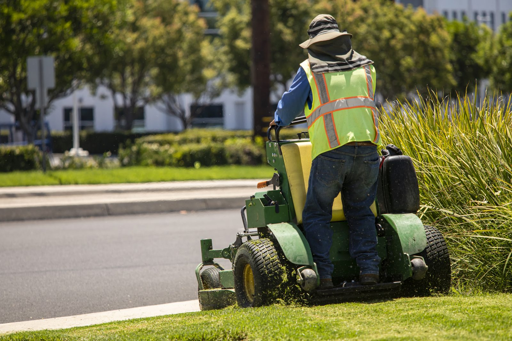
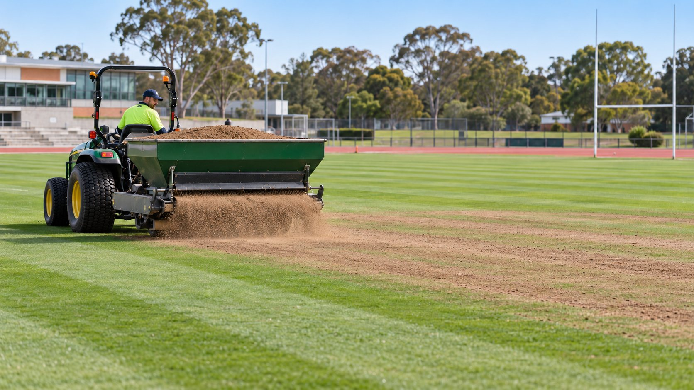
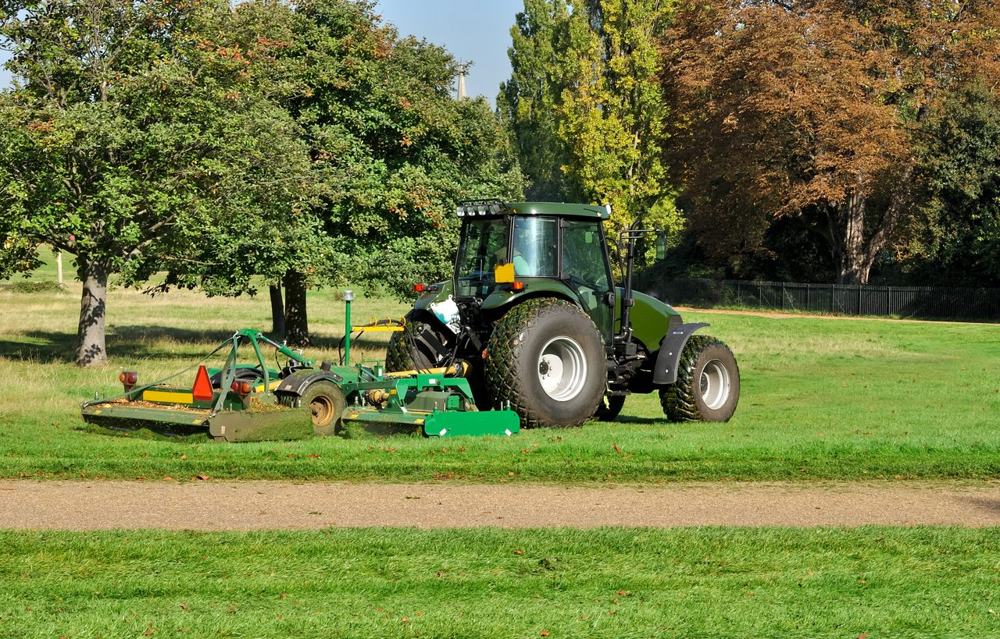
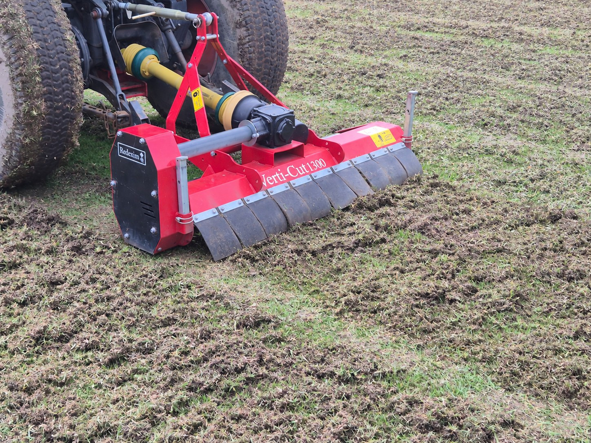
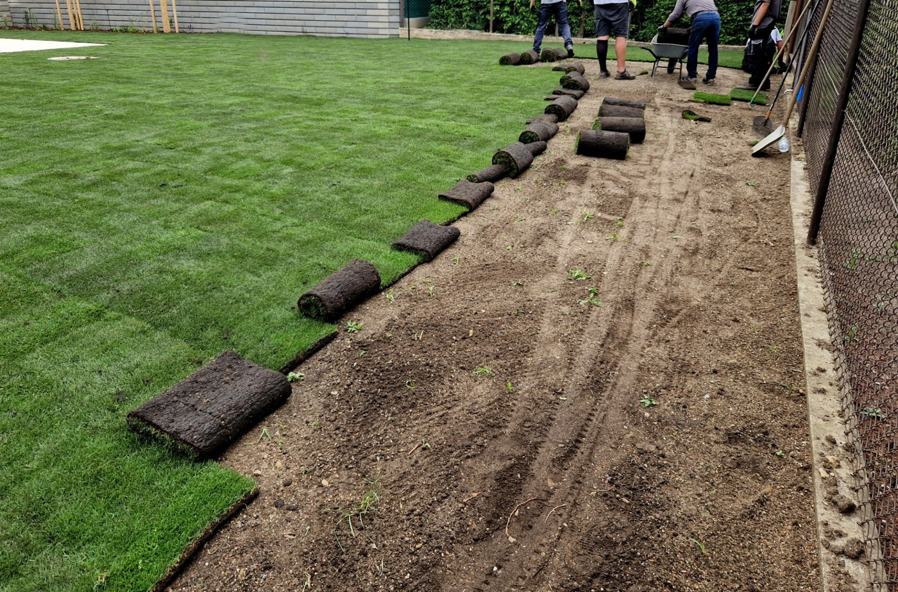
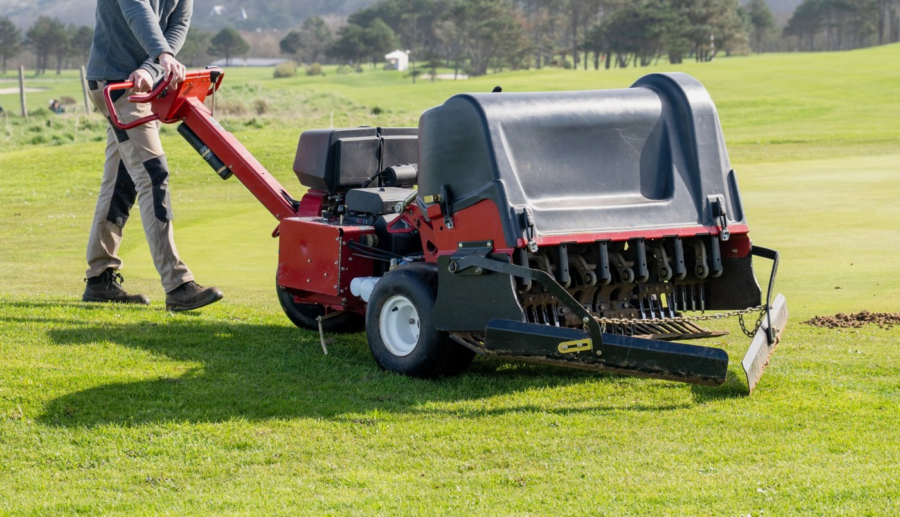

Grounds maintained. Playing fields improved.
Ongoing grounds maintenance for schools, aged care and commercial sites. Specialist turf care, renovations and field improvements when your grounds need more.
Working with Children Checked and Police Checked crews
Who we work with
- SchoolsGrounds that are safe and ready for every school day.
- Aged care facilitiesQuiet, low-disruption care around residents.
- Commercial sitesOffices, estates and retail grounds kept to standard.
ONGOING CARE
A grounds partner for the whole year
From the school oval to garden beds and entrances, keep your site on a planned maintenance program with one point of contact.
View maintenance programsContract grounds maintenance
Scheduled mowing, edging, garden upkeep and site presentation, with an agreed scope and visit frequency.
School ovals and sports turf
Mowing and seasonal turf care planned around use, growth and recovery, with surface issues identified during regular visits.
One plan, clear priorities
Routine care scheduled around your site. Larger improvements assessed and quoted separately so you can plan your budget.

SPECIALIST TURF PROJECTS
Improve the surface. Plan the next season.
Address worn turf, compaction and uneven coverage with a targeted renovation or turf replacement. We scope the work around the condition of your grounds, available budget and time away from play.
Aeration and top-dressing · Overseeding and repairs · New turf supply and laying · Playing-field improvements
Explore turf renovations & upgradesBuilt for busy schools and facilities
Screened before they arrive
Every crew member holds a Working with Children Check and a Police Check, so you can approve site access with confidence.
Risks found early
We look for hazards like uneven turf, slippery paths and blocked sightlines, and flag them before they become incidents.
Service you can plan around
A written scope, a set schedule and one point of contact, so your team isn't chasing updates.
Grounds care across Greater Melbourne
Based in Narre Warren, we support schools, aged care facilities and commercial properties across Greater Melbourne.
Local service. Wider reach.
Talk to us about an ongoing grounds maintenance program or a specialist turf project at your site. We’ll discuss your location, access requirements and preferred schedule as part of the quote.
Discuss your siteLet’s plan the year ahead
Discuss a maintenance contract, an upcoming renewal or a turf project. We’ll arrange a site visit and put the scope in writing.
Contract grounds & turf care
Regular grounds maintenance for schools, aged care facilities and commercial properties, with seasonal turf care built around your site.
Ongoing grounds maintenance

Our core service is ongoing grounds maintenance. We agree the areas, tasks and visit frequency with you, then plan the work around school terms, site access and seasonal growth.
- Mowing and edging
- Garden bed maintenance
- Hedge and shrub trimming
- Litter and debris clearing
- Seasonal tidy-ups
- Hazard reporting during visits
Good for: school grounds, aged care gardens, commercial estates.
Sports turf maintenance

Keep school ovals, playing fields and high-use lawns on a seasonal care program. We review wear and turf condition alongside the mowing schedule, then agree what the surface needs next.
- Scheduled oval and lawn mowing
- Seasonal fertilising programs
- Weed control
- Turf condition and wear checks
- Seasonal turf care planning
- Renovation recommendations
Good for: school ovals, playing fields and high-traffic lawns.
Planning a larger improvement? See turf renovations and project works.
Vegetation management

Targeted vegetation control keeps boundaries, access routes and outdoor areas clear, safe and well maintained.
- Brush cutting and overgrowth control
- Hedge and shrub management
- Fence-line and boundary clearing
- Weed and regrowth management
- Access-way clearance
- Green-waste removal
Good for: site boundaries, fence lines, service areas and overgrown grounds.
Hardscape pressure washing
Clean hard surfaces make a site look cared for and make it safer to walk on. We remove the algae, moss and grime that create slip hazards.
- Paths and walkways
- Courtyards and outdoor dining areas
- Entrances and ramps
- Car parks and driveways
- Bin areas
- One-off or scheduled cleans
Good for: entrances, aged care courtyards, school walkways, car parks.
Built around your site's rules
Schools
Work is planned around school hours and events, with screened crews and equipment kept clear of student areas.
Aged care facilities
Low-noise, low-disruption visits around residents, with attention to safe paths, clear entrances and tidy outdoor spaces.
From site visit to ongoing care
Site visit
We review the grounds, surface condition, current arrangements and your priorities.
Written scope and quote
Agree the tasks, visit frequency, seasonal priorities and contract pricing. Project works are quoted separately.
Scheduled service
Screened crews turn up when agreed and work to the scope.
Regular review
Review the grounds as seasons change and identify any improvements for a separate project scope.
Ready for a quote?
Tell us about your site and the services you need.
RENOVATIONS & FIELD IMPROVEMENTS
Give your turf a stronger season
Targeted turf renovation, repairs and new turf installation for school ovals, playing fields and shared outdoor spaces.
From routine care to lasting improvement
Some surface problems need more than the next maintenance visit. We assess worn areas, turf coverage and compaction, then develop a project scope around your priorities and the time available for recovery.
Project works can complement an ongoing LGM maintenance program or be discussed as a standalone job. Each project has its own scope, timing and quote.
Turf renovation

Plan a renovation around the surface condition, turf type and season. Scarifying or dethatching can be included to remove excess thatch, with time allowed for turf recovery before heavy use resumes.
- Aeration for compacted turf
- Scarifying / dethatching
- Top-dressing
- Overseeding where suitable
- Seasonal fertilising
- Worn-area repairs
- Recovery and aftercare planning
New turf & replacement

Restore tired areas or establish new lawn with turf supply and laying, with preparation and follow-up care agreed for the site.
- New turf supply and laying
- Replacement of damaged areas
- School grounds and shared lawns
- Establishment care planning
Playing-field improvements

Build a practical improvement plan for school ovals and playing fields. Start with the areas that need attention and stage the work around term breaks, sporting calendars and budget.
- Surface condition review
- Targeted renovation scopes
- Turf coverage improvements
- Staged repair and replacement
The site assessment determines what is suitable and what requires further specialist investigation.
A clear plan from assessment to aftercare
Assess
Walk the surface and discuss use, wear and your goals.
Scope
Agree the work, exclusions, budget and available window.
Schedule
Plan access and works around the site and suitable conditions.
Maintain
Agree recovery care and an ongoing maintenance plan.
Planning a turf project?
Tell us what needs improving and when the grounds are available.
Safety and compliance
Schools and aged care hold contractors to a higher standard. We work to it.
How we protect your site
Compliance is part of how we run every job, not a paperwork add-on.
- People are screened
- Everyone who works on your site, including subcontracted crew members, holds a Working with Children Check and a Police Check before they start.
- Hazards are found early
- We look for slippery paths, uneven turf, damaged surfaces and blocked sightlines during regular visits, and report them to you.
- Work areas are controlled
- Equipment is secured and work areas are marked off while students, residents or visitors are nearby.
- Scope is written down
- You know what will be done, when it will be done and who will be doing it. Nothing is left to assumption.
For procurement teams
Need documents for a vendor panel, tender or contractor register?
On request we can provide:
- Our one-page capability statement
- Confirmation of staff screening
- A site-specific risk assessment with your quote
About us
Ongoing grounds care and specialist turf improvements for the places people use every day.
Who we are
Logic Grounds Management is a commercial grounds maintenance and turf care business serving Greater Melbourne. We work with schools, aged care facilities and commercial sites where the standards for contractors are high and the grounds are used by a lot of people every day.
Long-term grounds maintenance is the foundation of our service. We bring mowing, garden upkeep and seasonal turf care into an agreed program, with a clear scope and one point of contact.
Turf is our specialty. Alongside regular maintenance, we scope renovation, turf replacement and playing-field improvements to help clients get more from their outdoor spaces. Those projects are planned and quoted separately, with aftercare considered from the start.
How we think about the work
- Proactive, not reactive
- We would rather flag a problem on a routine visit than clean up after an incident.
- Compliance comes first
- Screening, site safety and clear paperwork are built into every job from the first quote.
- Turf is the specialty
- Healthy, even turf is safer and looks better, and it takes a program, not just a mower.
Let's look at your grounds
We'll visit the site and put a written quote together.
Request a quote
Tell us about your maintenance needs or turf project and we’ll arrange a site visit and written quote.